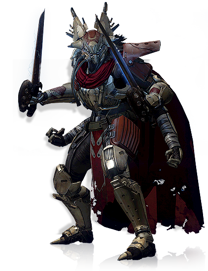

The Fallen are a nomadic race of four-armed bipedal humanoids. They are a species of pirates and mercenaries located on Earth, the Moon, Venus, and The Reef, and are one of the primary antagonist races in the Destiny series
To check out Forsaken, click here